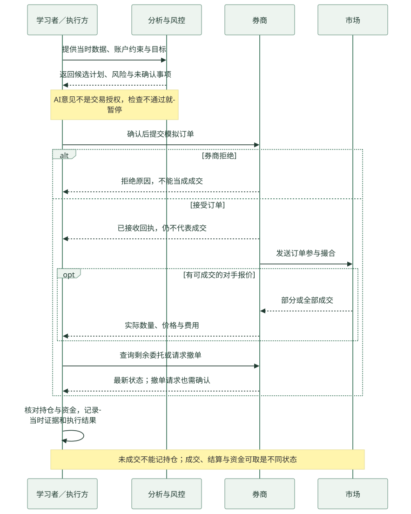

先把零散知识连起来
先看全貌，再学细节。
先知道自己正在解决哪一步的问题，再去读文章或做题。下面的图是教学示意，不是自动交易系统的真实部署图。
01 / 流程图
先学什么，后学什么？
这是一条按实际问题组织的建议路线。学期权是可选专题，不是买股票前必须经过的步骤。

02 / 领域关系图
账户、证据、计划、订单，是什么关系？
领域图就是把“有哪些东西、它们怎样影响彼此”画出来。箭头旁的字说明关系，不表示必然成功。

03 / 决策流程图
从“看好”到“可以考虑提交”，中间查什么？
每一道检查都可能让计划停下来。补齐一项后，要重新检查全部条件；AI一致赞同也不能跳过。

04 / 时序图
下单以后，谁先做什么？
从上往下看时间，横着看消息发给谁。箭头是请求或回应；“已接收”与“已成交”是不同消息。

没有成交回报，就不能当成买到了
市价单也不保证立刻成交；限价单可能只成交一部分。请求撤单后仍需核对最终状态，查清之前不要因为没看到回报就重复下单。成交、结算和资金可取也不是同一时刻。